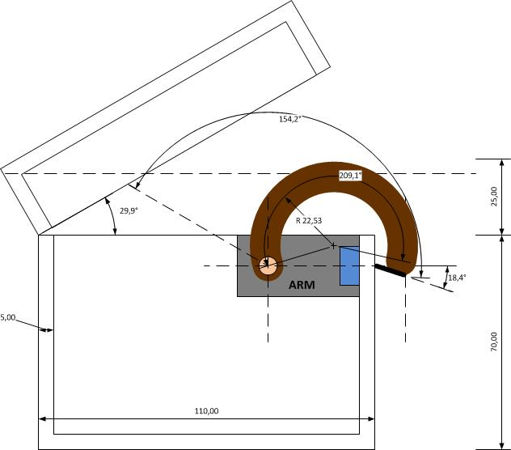
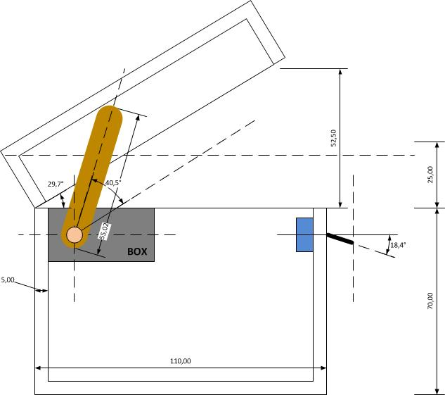

CAJA INUTIL CON ARDUINO
Trabajo de Sintesi realizado por Raimon Pera y Jordi Manzanera
FASES DEL PROYECTOs
IDEA
DESARROLLO
CONCLUSIÓN
IDEA
Nuestra idea para este proyecto de síntesis es crear una caja inútil (useless box) que básicamente es un juguete que no quiere mantenerse encendido. Su única función importante es apagarse cuando tu decides encenderla.
La idea surge después de que unas cuantas ideas anteriores no fueron permitidas en el proyecto. Después de aquello nos pusimos a buscar por Internet posibles nuevos proyectos, hasta que nos topamos con la caja. El proyecto nos llamó la atención y decidimos proponerlo. El proyecto fue aceptado y al momento ya nos pusimos a buscar la información y los materiales necesarios para llevar el proyecto a cabo.
Nuestro objetivo principal para este proyecto, es conseguir manipular un Arduino para que haga una orden de forma automática, en este caso, la orden será que apague el interruptor que nosotros hayamos abierto con anterioridad.
DESARROLLO
- Comprar los materiales necesarios.
- Conectar los componentes con los pings de la placa.
- Escribir el codigo y subirlo a la placa.
- Probar que funciona correctamente.
- Soldar los cables.
- Montar los componenetes en la caja.
ESQUEMAS


CONCLUSION
Como conclusion,hemos hecho un proyecto que nos gusta y que es divertido, aunque a sido un proceso con dificultades a sido muy satisfactorio poder acabarlo y hemos aprendido muchas cosas de el tanto de programación como de montaje.
También hemos aprendido a programar esta pagina web en html, css y javascript por lo que podemos considerar que este proyecto a sido util para aumentar nuestros conocimientos este curso.